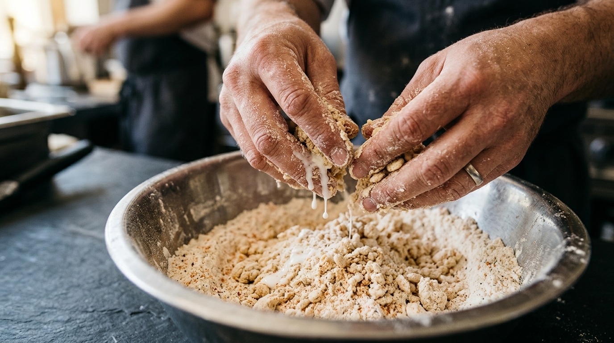
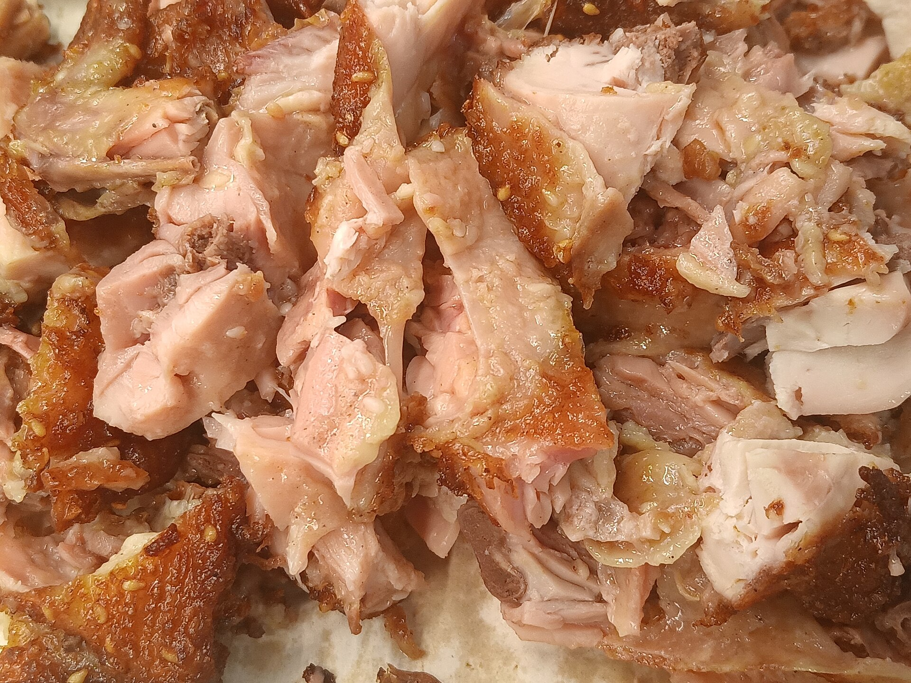
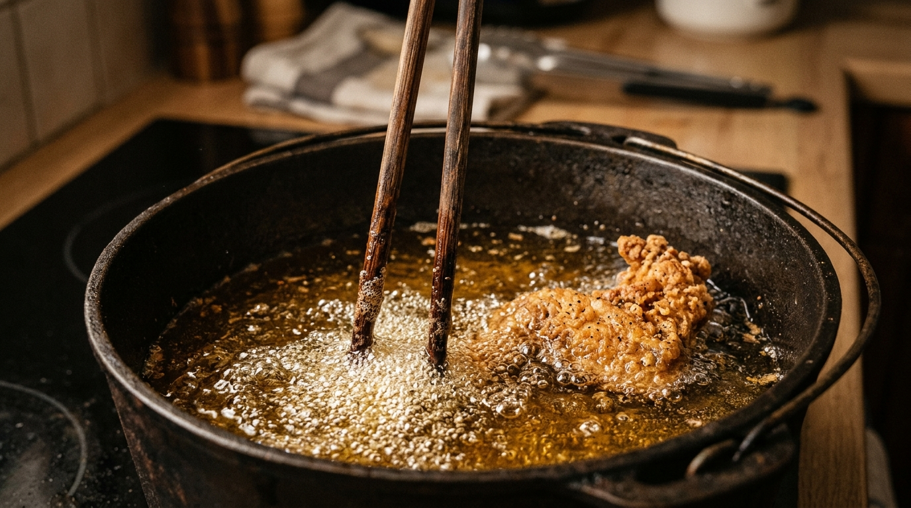

Công thức gà rán giòn rụm kiểu KFC & Popeyes đã chuẩn hóa từng gram cho 1 kg thịt gà. Không cần kinh nghiệm: bạn chỉ cần chuẩn bị 1 Tô Sữa Ướp, 1 Thau Bột 7:3 và làm theo đúng 4 bước bên dưới.
Đừng đọc chữ vội! Toàn bộ quá trình làm mẻ gà rán ngoài tiệm chỉ gói gọn trong 2 dụng cụ chuẩn bị và 4 bước nối tiếp nhau như sơ đồ dưới đây. Bấm vào bất kỳ bước nào để nhảy tới hướng dẫn chi tiết.
Tại sao gà tự chiên ở nhà hay bị cứng vỏ hoặc ỉu xìu? Đây là 3 nguyên lý cốt lõi bạn cần nắm trước khi bắt tay vào cân nguyên liệu:
Nguyên lý 1
Tỷ lệ bột vàng: 70% Bột mì đa dụng : 30% Tinh bột bắp
Nếu chỉ dùng 100% bột mì, vỏ gà sẽ cứng đơ như bánh quy. Pha đúng 7 phần bột mì số 11 (tạo khung vảy cứng cáp) với 3 phần tinh bột bắp (hút ẩm giúp vỏ giòn xốp, cắn rộp rộp mà không mỏi hàm) cộng thêm 5g bột nở.
70% Bột mì số 11 (280g)Dựng khung vảy xù sắc nét
30% Bột bắp (120g)Hút ẩm, giòn tan
Nguyên lý 2
Tự làm sữa Buttermilk bằng Sữa tươi + Giấm/Chanh
Axit nhẹ từ giấm trắng (hoặc cốt chanh) kết hợp với sữa tươi không đường sẽ làm sữa kết tủa sệt lại. Hỗn hợp này phá vỡ cấu trúc protein cứng trong thịt gà, giúp miếng gà bên trong mềm mọng và không bao giờ bị khô bở khi chiên kỹ.
250 ml Sữa tươi+15 ml Giấm / Chanh→Nghỉ 5 phút = Sữa Buttermilk sệt
Nguyên lý 3
Rưới chính nước ướp sữa vào bột khô để tạo vảy
Vảy xù trên miếng gà KFC không tự nhiên sinh ra từ bột mịn. Trước khi lăn gà, bạn múc 3 – 4 muỗng canh nước sữa đang ướp gà rưới rải rác vào thau bột khô rồi dùng đầu ngón tay xoa nhẹ thành các hạt vụn cỡ hạt đậu xanh.
Khi thả gà vào dầu sôi chuẩn 170°C – 175°C, bọt khí sủi đều quanh các hạt bột ẩm, đẩy hơi nước thoát ra và khóa cứng lớp vảy vàng giòn.
Bảng cân nguyên liệu tự động (Chuẩn hóa theo kg gà)
Chọn số ký gà bạn định làm hôm nay và hương vị yêu thích (KFC Thảo Mộc hoặc Popeyes Cay Nồng). Bảng bên dưới chia sẵn thành Tô A (Đồ ướp ướt) và Thau B (Đồ trộn bột khô) để bạn bày ra bàn bếp không bị nhầm.
KFC Thảo Mộc: Thêm lá Oregano khô, lá Thyme khô và bột gừng vào Thau Bột B. Dùng bột ớt Paprika tạo màu đỏ cam đẹp mắt mà hoàn toàn không cay.
Popeyes Cay Nồng: Thêm 2–3g bột ớt Cayenne cay ấm vào Tô Sữa Ướp A để vị cay thấm sâu vào tận thớ thịt bên trong.
Full Option: Vừa ướp ớt Cayenne cay trong thịt (Tô A), vừa trộn bộ ba thảo mộc Oregano + Thyme + Gừng vào vỏ bột (Thau B).
Đơn vị đo:
Dụng cụ 1
Tô A · Thịt gà & Hỗn hợp ngâm ướp (Ướt)
Dùng để ngâm gà trong tủ lạnh 2–8 tiếng và nhúng gà khi áo bột
Nguyên liệu chính
Đùi to >200g nhớ khía 1–2 đường sát xương để chín đều
Khuấy vào sữa tươi, để nghỉ 5 phút cho sữa kết tủa sệt lại
Tạo độ kết dính cho lớp áo bột không bị bong khi chiên
Gia vị ướp thịt (cho chung vào Tô A)
Dụng cụ 2
Thau B · Hỗn hợp bột áo khô (Tỷ lệ 7:3)
Chuẩn bị trong thau thật rộng lòng để dễ bốc bột và xóc vảy
Khung bột 7:3 tạo vảy giòn
280g tạo khung vảy
120g hút ẩm giòn xốp
Gia vị trộn bột (giúp vỏ đậm đà)
1/2 m.cà phê lá Oregano khô + 1/2 m.cà phê lá Thyme khô + 1/2 m.cà phê bột gừng
Mẹo kết nối Tô A sang Thau B trước khi lăn gà
Múc 3 – 4 muỗng canh (~50 ml) nước sữa ướp ở Tô A rưới vào 400g bột khô Thau B rồi dùng đầu ngón tay xoa tơi thành các hạt vụn cỡ hạt đậu xanh.

Hướng dẫn thực hành từng bước (4 Bước)
Bấm chọn từng bước dưới đây để xem hình minh họa, sơ đồ thao tác tay và lưu ý quan trọng. Bạn cũng có thể bấm “Xem tất cả 4 bước” nếu muốn đọc liền mạch.
Bước 1 / 4Thời gian: Tối thiểu 2 tiếng · Ngon nhất 6–8 tiếng qua đêm
Ngâm ướp thịt gà trong sữa Buttermilk (Tô A)
Sơ chế & thấm khô gà: Rửa gà với nước muối loãng rồi dùng khăn giấy thấm thật khô từng miếng. (Nếu đùi to trên 200g, dùng dao khía 1–2 đường sát xương để khi chiên chín đều bên trong).
Pha sữa Buttermilk: Đổ 15 ml giấm trắng (hoặc cốt chanh) vào 250 ml sữa tươi không đường, khuấy nhẹ và để nghỉ đúng 5 phút cho sữa hơi kết tủa sệt lại.
Trộn trứng & ướp lạnh: Đập 1 quả trứng gà và toàn bộ gia vị ở Tô A vào tô sữa, đánh tan. Cho gà vào trộn đều, bọc kín màng bọc thực phẩm và cất ngăn mát tủ lạnh.
Lưu ý cho người mới: Đừng quên thấm khô gà trước khi ướp và bắt buộc phải có 1 quả trứng gà, nếu không lớp vỏ bột rất dễ bị tuột khỏi miếng thịt khi chiên.
Sơ đồ thao tác Bước 2:
1. Trộn đều Thau Bột B→2. Rưới 3–4 muỗng sữa ướp→3. Xoa đầu ngón tay→4. Ra hạt vụn cỡ đậu xanh
Bước 2 / 4Thời gian: 2 phút ngay trước khi chiên
Tạo “hạt vảy” trong thau bột khô (Thau B)
Trộn thau bột 7:3: Cho toàn bộ nguyên liệu ở Thau B (280g bột mì số 11 + 120g tinh bột bắp + 5g bột nở + các gia vị trộn bột) vào một chiếc thau thật rộng rồi đảo đều.
Rưới nước sữa ướp: Dùng muỗng múc khoảng 3 – 4 muỗng canh hỗn hợp nước sữa đang ướp gà ở Tô A rưới rải rác khắp mặt thau bột khô.
Xoa tạo hạt đậu xanh: Dùng các đầu ngón tay xoa nhẹ và bóp tơi để phần bột dính sữa vón lại thành các hạt vụn nhỏ li ti cỡ hạt đậu xanh. Đây chính là phần sẽ bung thành vảy giòn khi gặp dầu sôi!
Dấu hiệu chuẩn: Nhìn vào thau bột thấy có nhiều vụn bột nhỏ lợn cợn như cốm/đậu xanh xen lẫn bột mịn, không bị vón thành cục bột nhão quá to.

Sơ đồ Khô → Ướt → Khô (Bước 3):
1. Lăn bột khô lần 1→2. Nhúng lại tô sữa ướp→3. Bốc bột bóp 8–10 lần→4. Giũ sạch bột thừa
Áo khô lần 1: Gắp từng miếng gà từ tô ướp ra (nhấc lên vài giây cho ráo bớt nước sữa), đặt vào thau bột khô lăn đều lần 1 cho bột phủ kín bề mặt thịt.
Nhúng ướt nhanh: Cầm miếng gà đó nhúng nhanh trở lại tô nước sữa ướp (hoặc một bát nước đá lạnh) rồi nhấc ra ngay lập tức.
Áo khô lần 2 & Bóp 8–10 nhịp: Đặt lại gà vào thau bột khô lần 2. Dùng hai bàn tay bốc bột phủ dày lên gà, xóc và bóp nhẹ vào miếng gà khoảng 8 – 10 lần để các hạt vảy bám chặt, sau đó cầm miếng gà giũ nhẹ cho rơi hết bột thừa. Các vảy xù sẽ hiện rõ ngay lập tức!
Cấm kỵ khi lăn bột: Lăn bột tới đâu thả vào chảo chiên tới đó! Không lăn bột sẵn hàng loạt rồi xếp chờ ngoài đĩa vì độ ẩm từ thịt sẽ làm bột bị ỉu nhão.

Mẹo Double Fry (Giữ giòn 2–3 tiếng):
Lửa 1: 175°C (9–10p)→Nghỉ trên vỉ lưới (5p)→Lửa 2: 180°C (2p)→Xếp lên vỉ thoáng đáy
Bước 4 / 4Nhiệt độ dầu: 170°C – 175°C · Tuyệt đối không lót giấy thấm dầu
Thử nhiệt bằng đũa gỗ (175°C): Đổ dầu ngập ít nhất 1/2 miếng gà. Cắm đầu đũa gỗ khô chạm đáy nồi: thấy bọt khí sủi tăm sôi đều quanh đũa là đạt ~175°C. Không để dầu bốc khói (>185°C) vì vỏ sẽ cháy sậm khi thịt sát xương còn đỏ.
Thời gian chiên chuẩn (lửa vừa):Cánh gà / miếng nhỏ: 9 – 11 phút · Đùi tỏi / đùi góc tư: 13 – 15 phút. Không thả quá nhiều miếng cùng lúc làm tụt nhiệt dầu đột ngột khiến bột hút dầu.
Mẹo giữ giòn lâu 2–3 tiếng (Double Fry): Chiên lần 1 khoảng 9 – 10 phút cho chín 85%, vớt gà ra để nghỉ trên vỉ lưới (cooling rack) 5 phút cho thoát hơi ẩm. Sau đó bật lửa lớn cho dầu lên ~180°C, thả gà vào chiên lại đúng 2 phút rồi vớt ra xếp lên vỉ lưới.
Bí quyết không bị ỉu đáy vỏ: Luôn xếp gà đã chiên lên vỉ lưới thoáng khí, tuyệt đối không đặt trực tiếp lên giấy thấm dầu vì hơi nước nóng đọng lại sẽ hấp mềm lớp vỏ dưới đáy.
Khi đang đứng cạnh chảo dầu nóng, bạn chỉ cần bấm chọn đúng loại miếng gà hoặc chế độ Double Fry (Chiên 2 lửa) bên phải. Đồng hồ sẽ đếm ngược từng giây, nhắc việc theo từng giai đoạn và đổ chuông báo khi hoàn tất.
Cách nhìn bọt khí ở đầu đũa gỗ (Không cần nhiệt kế)
Chưa có bọt hoặc bọt lơ lửng< 150°C · Dầu nguội (Chờ thêm)
Nếu mẻ gà đầu tiên của bạn gặp sự cố, hãy tra nhanh nguyên nhân và cách khắc phục ngay dưới đây:
1. Tại sao vỏ gà chiên xong bị cứng đơ thay vì giòn xốp?
Do bạn dùng 100% bột mì hoặc bóp nén miếng gà quá mạnh tay khi áo bột. Hãy pha đúng tỷ lệ 280g bột mì số 11 + 120g tinh bột bắp + 5g bột nở. Khi áo bột lần 2, chỉ bốc bột phủ lên rồi xóc và bóp nhẹ 8–10 lần, sau đó giũ sạch bột thừa.
2. Tại sao vỏ ngoài đã vàng sậm mà thịt sát xương vẫn còn đỏ?
Dầu quá nóng (>185°C, bốc khói) hoặc miếng đùi gà to trên 200g nhưng chưa được khía. Với đùi lớn, bắt buộc khía 1–2 đường sát xương trước khi ướp, rã đông hoàn toàn và giữ lửa vừa ở 170°C–175°C suốt 13–15 phút.
3. Tại sao gà vừa vớt ra rất giòn nhưng 15 phút sau đáy vỏ bị ỉu?
Thủ phạm là giấy thấm dầu! Đặt gà nóng lên giấy thấm dầu hoặc đĩa phẳng khiến hơi nước từ thịt thoát ra bị chặn lại, ngưng tụ và hấp mềm đáy vỏ. Hãy luôn đặt gà lên vỉ lưới (cooling rack) và chiên 2 lửa (Double Fry).
4. Tại sao lớp áo bột bị bong tróc từng mảng khi đang chiên?
Do 3 lỗi: gà sau khi rửa chưa thấm thật khô bằng khăn giấy; quên cho 1 quả trứng gà vào tô sữa ướp để tạo keo kết dính; hoặc lăn bột xong để gà nằm chờ ngoài đĩa quá lâu trước khi thả vào dầu.
5. Không có nhiệt kế thì làm sao biết dầu đạt 175°C và 180°C?
Cắm đầu đũa gỗ khô chạm đáy nồi dầu: thấy bọt khí nhỏ sủi tăm đều đặn quanh đũa là đạt 170°C–175°C. Ở Lửa 2 (180°C), bật lửa lớn hơn 45 giây cho bọt sủi nhanh và mạnh hơn nhưng chưa bốc khói.